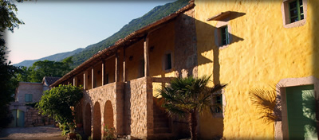

Dobrodošli u hotel "Balatura" u Triblju!

Izvan gužve turističkih jadranskih centara, u mirnoj dolini Vinodol,6 km od Jadranskog mora,
nalazi se naš hotel, okružen krševitim brdima i šumama. Tristo godina staro obiteljsko imanje, kompleks od više kamenih starih kuća,
preuređeno je u udobnu kuću za goste, pridajući važnost detaljnoj rekonstrukciji povijesne zgrade.
S mnogo ljubavi uređene hotelske sobe možete iznajmiti tijekom cijele godine.
Uz to nudimo razne događaje, izlete i seminare, koji Vaš boravak čine raznolikim i zanimljivim doživljajem.